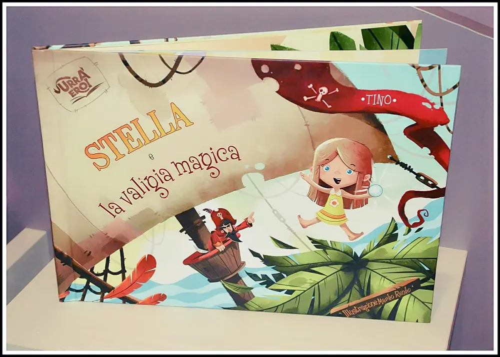
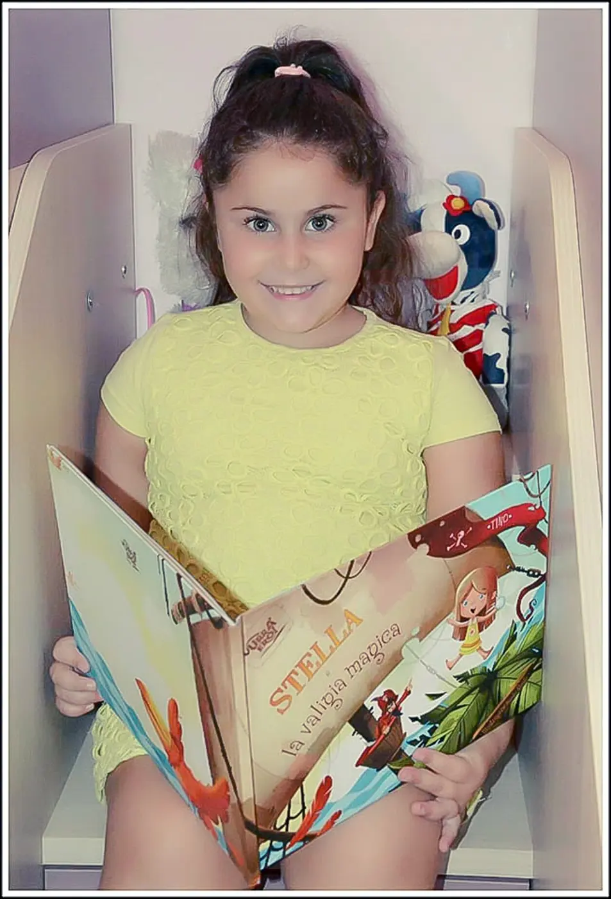
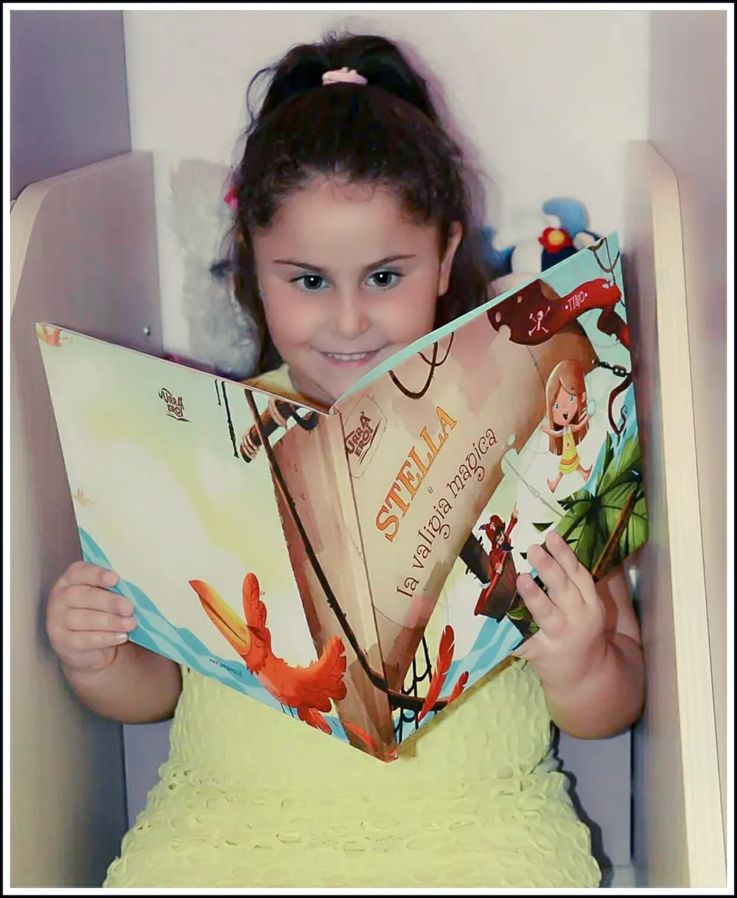
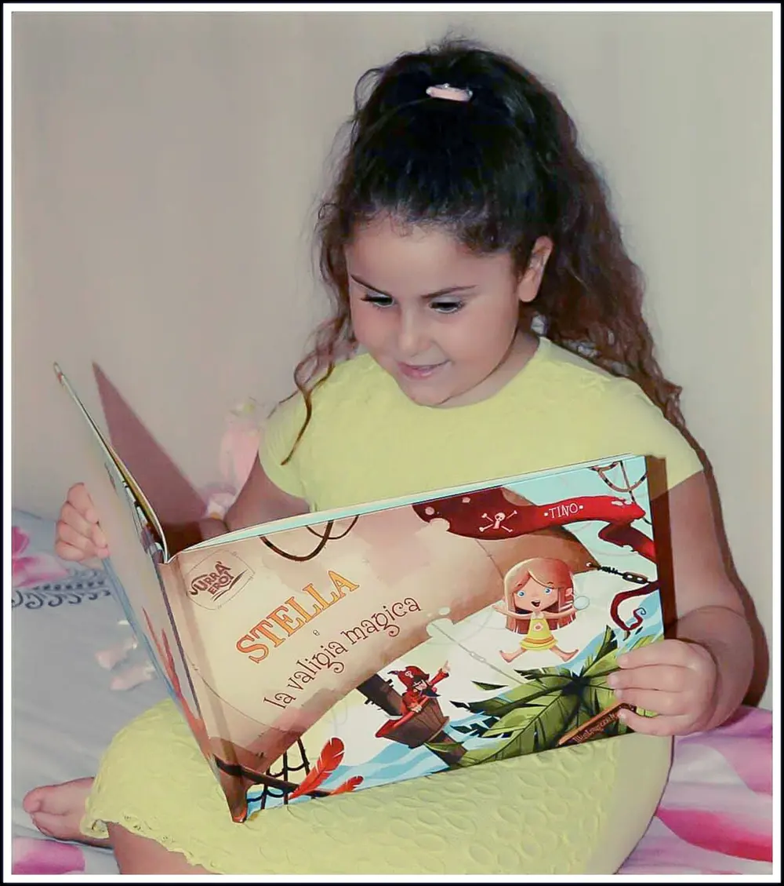
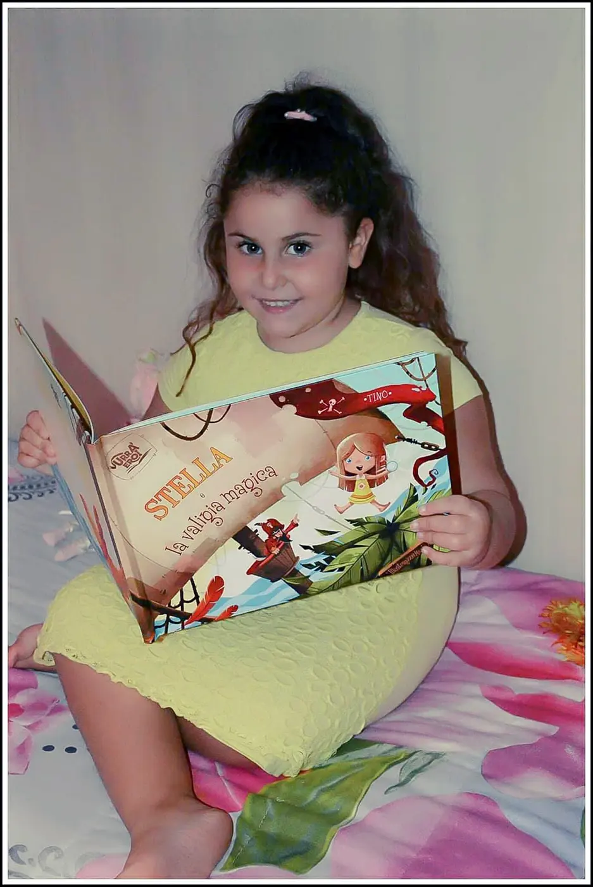

Libro: Urrà Eroi
Libro: I bambini restano tutti incantati ad ascoltare una favola, l'avete mai notato? Già normalmente da decenni ormai, ma se ci fosse la possibilità di personalizzare il libro con il nome del vostro bambino non sarebbe più magico quel momento della lettura?
E se sul libro delle favole il protagonista è proprio il vostro bambino anche con l'aspetto che assomigli a lui, non sarebbe fantastico?
Creare infatti un libro modificando l'aspetto del protagonista e il nome di quest'ultimo è diventato realtà.
Infatti, oggi è possibile con un sito davvero stupendo, dedicato interamente ai bambini, a rendere ogni occasione un regalo per bambini speciale per una lettura personale ed unica.
Urrà Eroi, di fatti, sono libri per bambini illustrati con la possibilità, oltre a personalizzare appunto il protagonista, anche scrivere una dedica e fare un pacchetto regalo.
Insomma, un'idea regalo strepitosa per tutti i bambini del mondo.
Sul sito, di semplice navigazione, come prima cosa si sceglie il libro che si vuole acquistare. Poi si prosegue con la personalizzazione del protagonista, scegliendo il sesso, tipo e colore dei capelli, colore degli occhi, occhiali, lentiggini... ed infine si inserisce ancora il nome ed ecco, in qualche secondo potrete già vedere tutto il racconto con il vostro piccino da protagonista.
Il libro che io ho scelto come regalo alla mia nipotina si intitola "Stella e la valigia magica".

Storie fantastiche:
Ispirata ad una bambina che sognava di stare su una spiaggia e nuotare con i pesci e delfini. Una storia per bambini fantastica che mi ha riportata un po’ bambina insieme a lei.


Inizialmente, infatti, parla anche di un postino che porta pacchi, e questo rispecchia proprio la nostra realtà dove lei mi chiede sempre se è arrivato qualcosa per lei.
Questa volta ho potuto, con felicità, dire che il pacco era proprio destinato a lei.

Abbiamo già riletto la storia 3 volte e non mi aspettavo tutta questa gioia nei suoi occhi nel vedersi protagonista di un libro.
Doppia sorpresa:
La sorpresa l'ha fatta anche un po’ lei a me, regalandomi sorrisi e sguardi di stupore.

Beh, questo sito possiamo dire che regala davvero momenti unici con i bambini. Momenti che forse al giorno d'oggi non si vedono più tanto spesso presi dalla tecnologia. È stato dunque un momento fantastico da ricordare e da mettere nell'archivio di istanti piacevoli e ricordi da raccontare quando la mia nipotina crescerà.
Regalate anche voi al vostro bambino un libro personalizzato Urrà Eroi e fategli vivere un'avventura magica. A me ha fatto sentire una zia felice.
Contenuto adatto a bambini dai 0 - 12 anni. Consegna gratuita in tutta Italia entro 5 giorni lavorativi.
Prezzo: 35,00 €